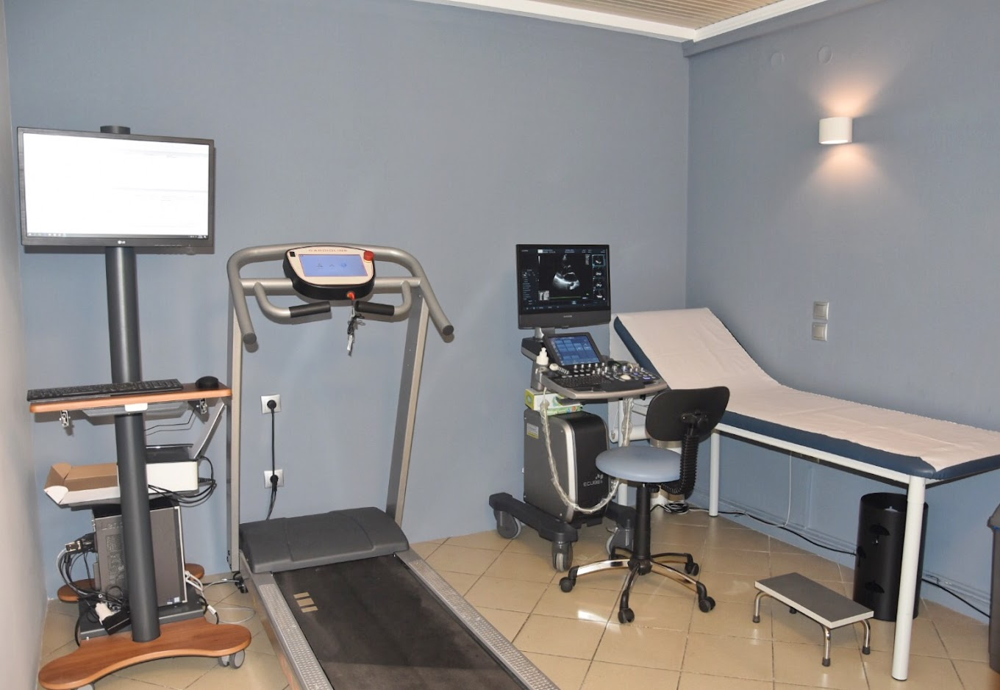

Δρ. Σωτήριος Κατράνας, Ειδικός Καρδιολόγος,
Διδάκτωρ Καρδιολογίας Α.Π.Θ.
"Στόχος μου είναι η επιστημονική γνώση να μεταφράζεται σε ασφάλεια για εσάς."
Απόφοιτος της Ιατρικής Σχολής Α.Π.Θ. (εισαγωγή κατόπιν Πανελλαδικών Εξετάσεων), ειδικεύτηκε στο Π.Γ.Ν.Θ. ΑΧΕΠΑ και κατόπιν μετεκπαιδεύτηκε στα κορυφαία νοσοκομεία του Λονδίνου Saint Bartholomew's Hospital, Royal Brompton Hospital και στο Neuromuscular Complex Care Centre του National Hospital for Neurology and Neurosurgery.
Αναλαμβάνει την καρδιολογική κάλυψη ενηλίκων, καθώς και περιστατικά παιδιών από 5 ετών.
Ολοκληρωμένη καρδιολογική παρακολούθηση με χρήση εξοπλισμού τελευταίας τεχνολογίας. Από ένα απλό ηλεκτροκαρδιογράφημα και triplex καρδιάς, μέχρι τη δοκιμασία κόπωσης (stress test) και την τοποθέτηση Holter ρυθμού για την καταγραφή αρρυθμιών.
Ρύθμιση και μακροχρόνια διαχείριση σοβαρών χρόνιων παθήσεων. Εξατομικευμένα θεραπευτικά πλάνα για όλες τις καρδιακές παθήσεις όπως π.χ. Αρτηριακή Υπέρταση, Στεφανιαία Νόσος, Καρδιακή Ανεπάρκεια, Δυσλιπιδαιμίες, Αρρυθμίες, Κολπική Μαρμαρυγή.
Ενδελεχής προληπτικός έλεγχος σε όλες τις ηλικίες. Προαθλητικός έλεγχος σε παιδιά (από 5 ετών) και ενήλικες, με άμεση έκδοση Κάρτας Υγείας Αθλητή (Δελτίο). Εξειδικευμένος προεγχειρητικός έλεγχος για τη διασφάλιση μέγιστης ασφάλειας πριν από κάθε χειρουργική επέμβαση.
Πλήρως πιστοποιημένο ιατρείο για ηλεκτρονική συνταγογράφηση και έκδοση παραπεμπτικών (ΕΟΠΥΥ).
Σύνθετες παθήσεις του μυοκαρδίου απαιτούν λεπτή και εξειδικευμένη ματιά. Η εμπειρία από το Saint Bartholomew's Hospital και το Royal Brompton Hospital του Λονδίνου, καθώς και από το Τμήμα Μυοκαρδιοπαθειών της A’ Καρδιολογικής Κλινικής του Π.Γ.Ν.Θ. ΑΧΕΠΑ μεταφέρεται απευθείας στους ασθενείς μας.
Η διαχείριση μιας σύνθετης ή σπάνιας πάθησης δεν είναι απλή υπόθεση. Απαιτείται κλινική γνώση, στοχευμένη προσέγγιση και προσωποποιημένη φροντίδα. Η εμπειρία από το Neuromuscular Complex Care Centre του National Hospital for Neurology and Neurosurgery του Λονδίνου, καθώς και από τη Μονάδα Νευρομυϊκών Παθήσεων του Π.Γ.Ν.Θ. ΑΧΕΠΑ υπό την MDA Hellas μεταφέρεται απευθείας στους ασθενείς.
Η ακαδημαϊκή έρευνα (PhD, ΑΧΕΠΑ, GR-iCardiacNet) αποκτά αξία όταν μεταφράζεται σε ασφάλεια για εσάς. Ο ασθενής γνωρίζει ακριβώς γιατί λαμβάνει την εκάστοτε θεραπεία.
Εξοπλισμός αιχμής σε ένα περιβάλλον σχεδιασμένο για την άνεση και την ασφάλειά σας.
Η εμπιστοσύνη σας είναι η μεγαλύτερη απόδειξη της ιατρικής μας προσέγγισης.